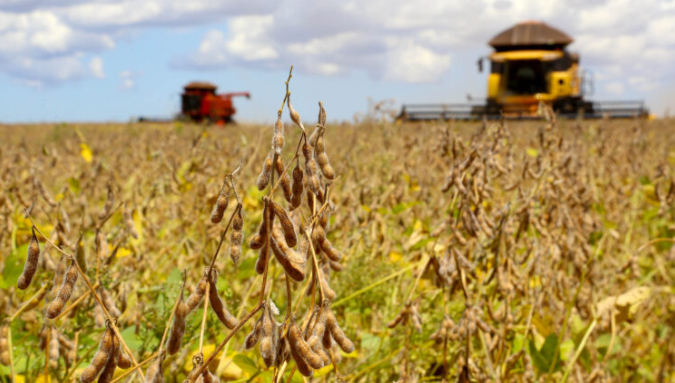

Guarapuava · Paraná · Brasil
A Terra que
Alimenta o Futuro
Entre Rios reúne a força da tradição agrícola centenária dos Suábios do Danúbio e as práticas sustentáveis que moldam o futuro do Paraná.
Conhecer a HistóriaUma comunidade
enraizada na terra
Fundada em 1951 por imigrantes suábios do Danúbio que chegaram ao Brasil após a Segunda Guerra Mundial, Entre Rios se tornou um dos mais importantes núcleos agrícolas do Sul do país.
Hoje, com uma população de cerca de 9.000 habitantes distribuídos em cinco colônias — Vitória, Jordãozinho, Cachoeira, Socorro e Samambaia —, a cooperativa AGRÁRIA lidera um modelo de desenvolvimento que combina alta produtividade com responsabilidade ambiental.
Ver linha do tempo →
O que move Entre Rios
Entre Rios em imagens
Práticas para o futuro
Explore a história completa
Da chegada dos imigrantes às conquistas do século XXI.